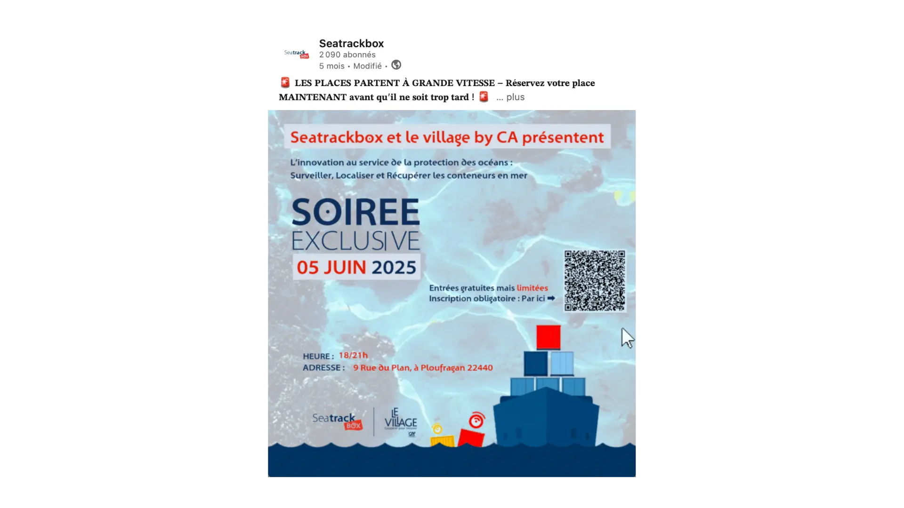

Event Design. data-en="Event Design"
L'Objectif
L’objectif était de transformer une invitation classique en un support plus impactant et immédiatement identifiable à l’univers SeaTrackBox.
Ma démarche
Le travail a consisté à reprendre les éléments visuels propres à la marque afin de créer une invitation plus attractive, cohérente et reconnaissable, tout en conservant son aspect professionnel.
01 · Analyse du support et de l’identité visuelle
Étude de l’invitation d’origine et repérage des éléments clés de la charte SeaTrackBox.
02 · Sélection des éléments graphiques
Choix des couleurs, formes et visuels distinctifs à intégrer pour renforcer la reconnaissance de marque.
03 · Refonte de la composition
Réorganisation de la mise en page pour rendre l’invitation plus moderne, claire et impactante.
04 · Intégration des codes de marque
Ajout des éléments graphiques pour ancrer visuellement l’invitation dans l’univers SeaTrackBox.
05 · Ajustements et finalisation
Travail sur l’équilibre visuel, la lisibilité et l’harmonie générale du support.
Performance
Inscriptions
0
Engagement
+0%
Outils utilisés


Élément graphique


Déclinaisons
Voir les déclinaisons

Post Rappel

Post LinkedIn
{kind=link}